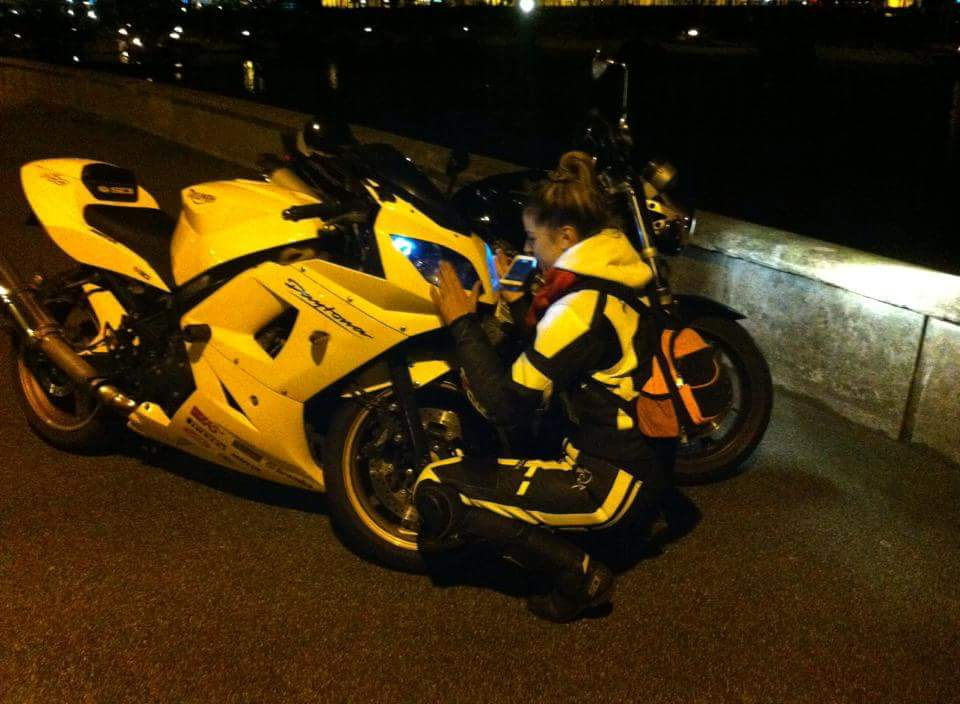

Monica - Monia
Speed & Ladies Hussaria Ireland
Kasia Wickowska (Honey Bee)
Driving instructor category A and B, lecturer and enthusiast of Italian motorcycles.
She is currently taking a course for the instructor of improving driving techniques category A and B. She has the authority to pursue the concept. cat. C. Always associated with motorization.  "I have gasoline in my veins," says Kasia, because her passion for motorization was infected by her father, grandfather and great-grandfather. As a child, she was already riding a motorcycle rallies in the back seat, so riding a motorcycle is not something new(different) for her.
Throughout, all the years she has gained experience and confidently states that the sporty style of riding with a motorcycle suits her best and that she uses grinding techniques of riding on the track.
Kasia's life motto is "If you think you know everything, it means you do not know anything. Humility and respect for a motorcycle is an integral part of a motorcyclist's life"